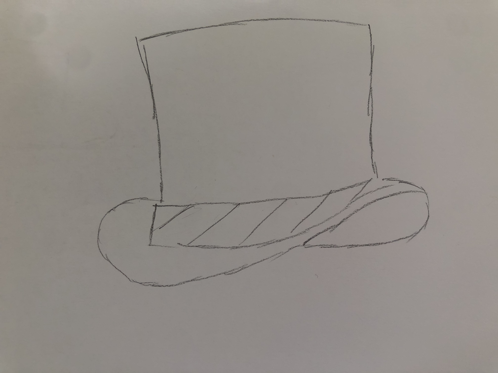

10/20/19
I created my code journal :)
10/21/19
Today I thought of ideas for the room and fixed my website a little!
10/25/15
Today I completed my room design codesketch :)
10/30/19
I was able to adjust a few things on my website and finalized more of my ideas for my ocean project!
10/31/19
My lab today was extremely eye opening! I just realized how interesting it is how every single website on the internet was first created just by simply using html. Wow!
11/12/19
I really liked our tiktok conversation in class today. I think it is super important to discuss current events, specifically relating to the technology world.
11/19/19
I've been having consistent labs and have been working on my ocean project. I now understand more about Javascript and more about its language.
12/13/19
I added fiz buzz to my code journal by making it on scratch! I really liked making in on scratch, since I now understand all of the parts to the code.
12/13/19
I've also completed my array/function assignment in one project. I included a button, a randomizer feature and an array.
12/19/19
I've improved my ocean project more and am working on having it be ready for the kindergarteners!
1/29/20
I finished my magic trick project, and although I had forgotten some skills in Javascript this project definitely helped me remember how to use it. I'm super excited for our upcoming projects, especially since they're going to be more personal.
1/31/20
I'm currently up to date with all of my projects and have been thinking of new ideas for my future project.
2/10/20
I used my previous knowledge of functions from my prior code and was able to make my random generator for my valentine!
2/14/20
I completed my valentine and made sure that it was pushed to website and worked.
2/17/20
I've been brainstorming different possible projects that I can continue to pursure for the rest of the year of this semester atleast. I really want to work on something that I am passionate about, such as something related to mental health and bettering others or an app or device to help children and people with disabilities with communicating.
2/24/20
I've decided to focus my project on children for disabilities, more specifically for ones who are not able to communicate verbally. I'm now going to start researching for my project.
2/28/20
Afer doing more research I've learned that there are little to no apps reguarding communication and disabled children. I might not be able to make an app for communication, so I've now changed my idea slightly to a guide/manual for those living with a disabled family member. I think I am going to either continue with that idea or try and see if I can still create my application (my initial idea).
3/4/20
I've started drawing some possible mock ups for my website and am going to continue doing so!
4/2/20
It's been a little while since I've done computer science, with corona and online school just starting again. For this assignment, we had to create an item that would make one feel invisible to security cameras on the street. I've decided to create an "invisible" hat, as I felt it could be easily worn.
3/15/20
During class today I began to create a really fun codesketch using the website p5js. I really like the style of the website and how although the coding itself wasn't too complex, I was able to create something insanely cool! Here's the link to check it out: https://editor.p5js.org/c23jg1/sketches/OEECVeqf6
3/22/20
After listening to this podcast about algorithms, all I have to say is WOW! I found this podcast incredibly interesting and enjoyed it a lot as it is not a subject that is commonly talked about. Just learning how much a factor race and gender are when conviciting someone was honestly eye opening. People of color were more likely to be convicted as opposed to someone who is white. Which leads me to believe that the algorithm could be claimed to be "racist". I do not believe that we should entirely rely on algorithms, since they're really not always accurate and statistics do not define a person.
3/24/20
After having my lab today I have decided that I want to start a new project. I'm not exactly sure what I want it to be, but I know that I want to include tiktoks related to corona to create some sort of journal or diary.
3/28/20
After reading the article about A1, I can definitely say I feel more educated on the subject and feel as if this artcile was incredibly eye opening. In the aspect of providing jobs, in the long this could really harm minimum wage workers in the future. Also with all of the pornography and more graphic things, I can honestly say I was really taken back, as I was not expecting it.
